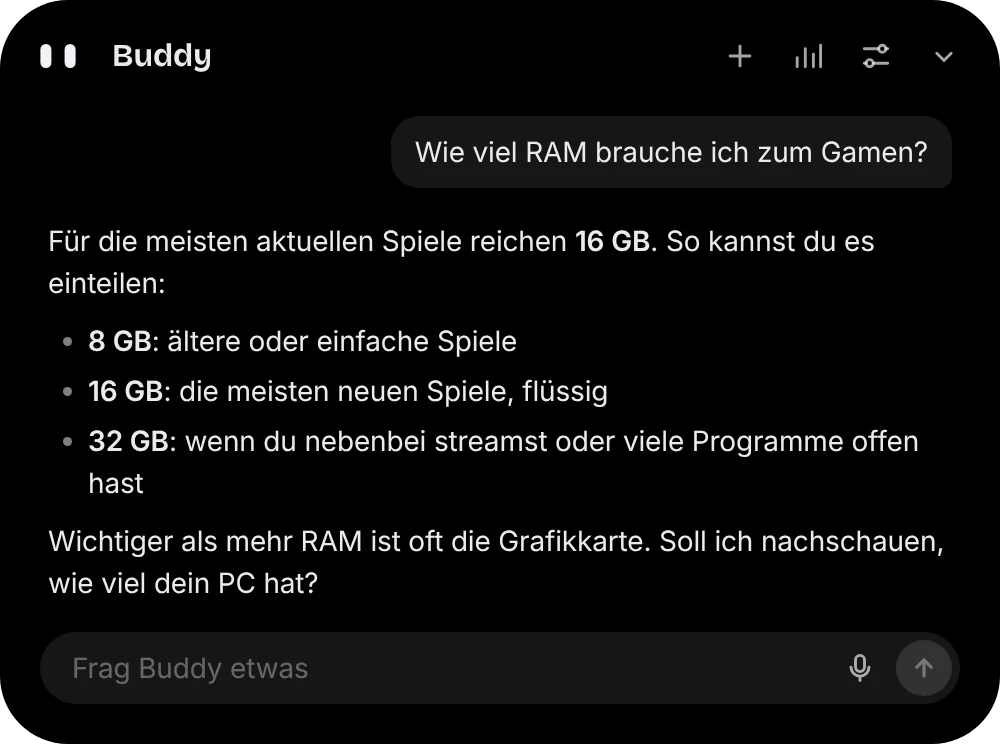
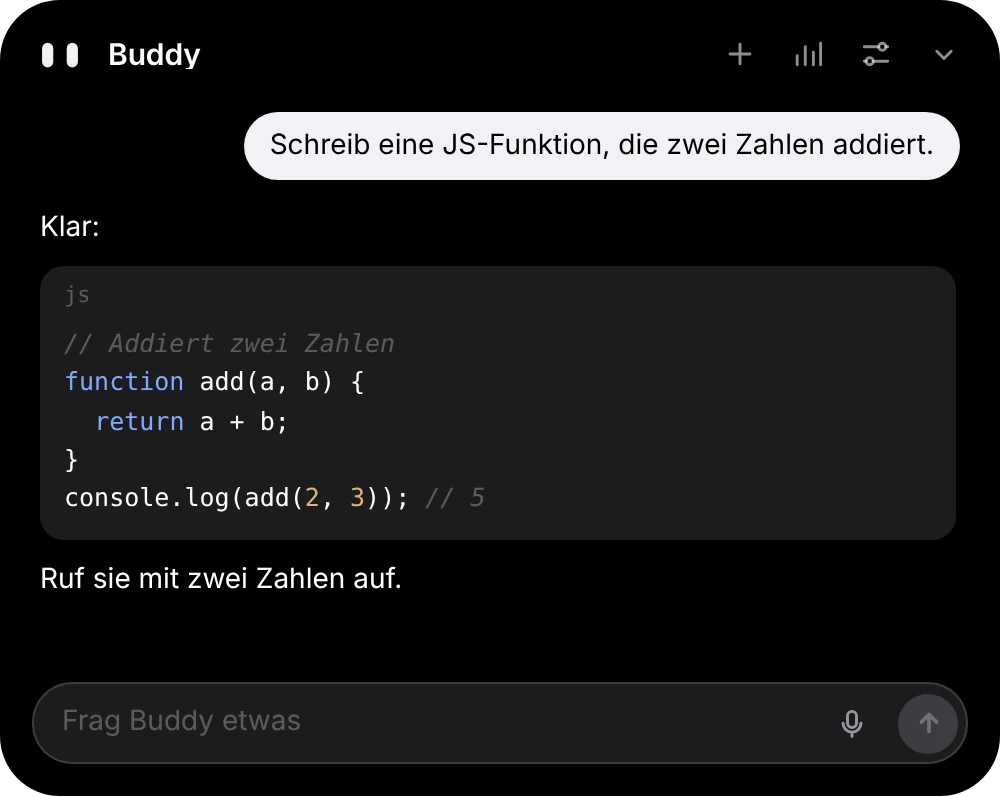
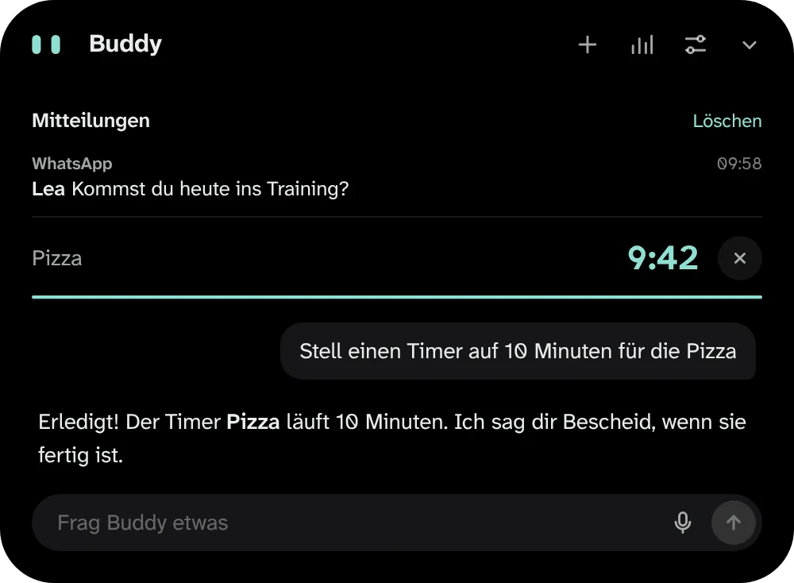
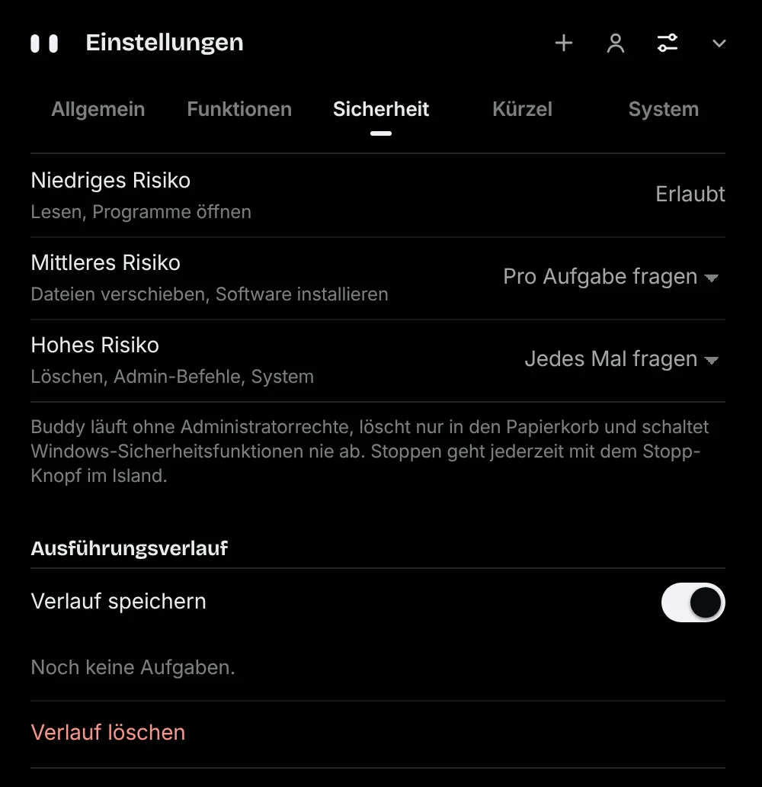
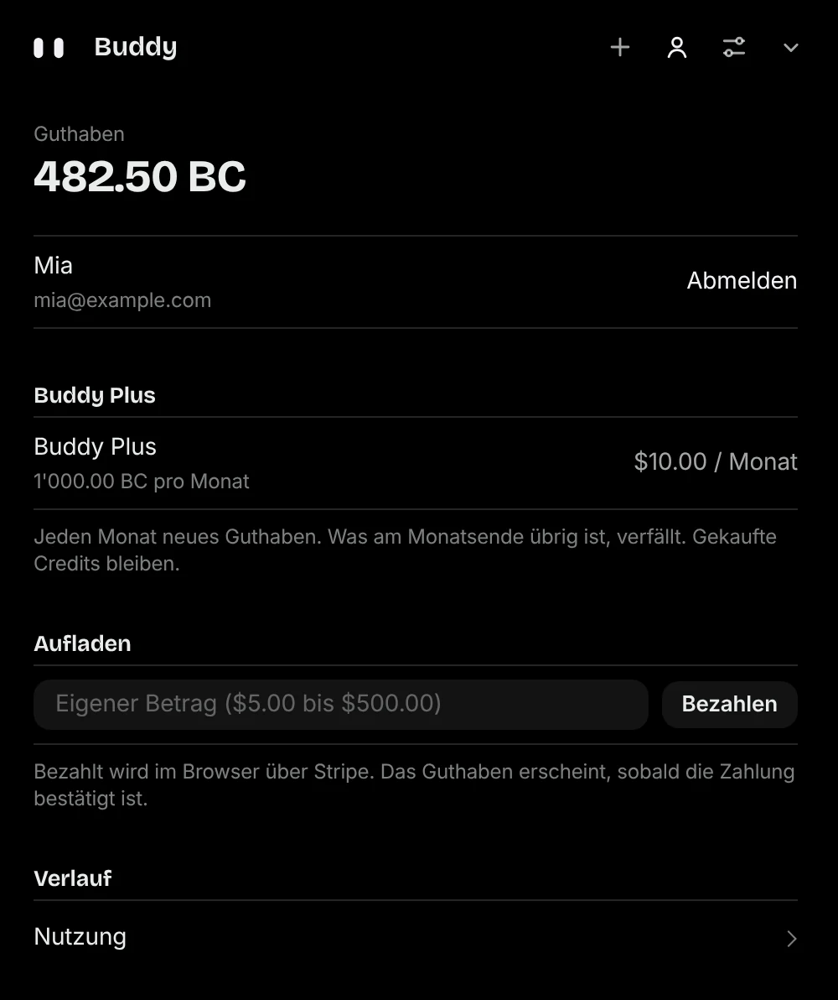

Fragen und schreiben
Lass dir etwas erklären, einen Text formulieren oder Code schreiben. Antworten erscheinen Wort für Wort, Code ist hervorgehoben und mit einem Klick kopiert. Gefällt eine Antwort nicht, lässt du sie neu schreiben.

Für Windows 10 und 11 · Open Source
Buddy Island ist eine kleine schwarze Insel oben in der Mitte von Windows. Ein Tastendruck, und du fragst, stellst einen Timer oder siehst deine Mitteilungen, ohne ein Fenster zu wechseln. Anmelden, Guthaben laden, loslegen.

Lass dir etwas erklären, einen Text formulieren oder Code schreiben. Antworten erscheinen Wort für Wort, Code ist hervorgehoben und mit einem Klick kopiert. Gefällt eine Antwort nicht, lässt du sie neu schreiben.

«Stell einen Timer für die Pizza» genügt. Windows-Mitteilungen erscheinen kurz oben in der Insel, Termine aus deinem Kalender meldet Buddy rechtzeitig, und die laufende Musik steuerst du direkt dort.

Bevor Buddy Dateien verschiebt oder etwas löscht, fragt er dich. Chatverlauf, Gedächtnis und Einstellungen bleiben auf deinem PC, und mit dem Stopp-Knopf in der Insel hältst du ihn jederzeit an.

Buddy antwortet über Buddy Cloud. Du meldest dich mit Google oder E-Mail an und bezahlst mit Buddy Credits. Abgerechnet wird nach dem, was du wirklich brauchst.
| Option | Was du bekommst | Preis |
|---|---|---|
| Guthaben aufladen | 100 Buddy Credits pro Dollar, gekaufte Credits verfallen nicht | eigener Betrag ab $5 |
| Buddy Plus | 1000 Buddy Credits jeden Monat, jederzeit kündbar | $10 pro Monat |
Bezahlt wird über Stripe. Die Preise verstehen sich ohne Mehrwertsteuer; Stripe rechnet sie je nach Land dazu. Mehr in den AGB.
Ein Klick auf das Personen-Symbol zeigt Guthaben, Abo und Verlauf. Aufladen geht direkt dort: Betrag eingeben, im Browser über Stripe bezahlen, und das Guthaben erscheint, sobald die Zahlung bestätigt ist.
Mit Buddy Plus kommen jeden Monat neue Credits dazu. Was davon am Monatsende übrig ist, verfällt; gekaufte Credits bleiben.

Die Installationsdatei für Windows kommt direkt aus dem GitHub-Release.
Datei öffnen. Weil Buddy nicht mit einem bezahlten Zertifikat signiert ist, warnt Windows: «Weitere Informationen» und dann «Trotzdem ausführen».
Beim ersten Start führt Buddy dich durch alles: Sprache wählen, mit Google oder E-Mail anmelden, Guthaben laden.
Mit Strg + Umschalt + Leertaste oder einem Klick auf die Insel. Updates installiert Buddy selbst, nach Prüfung ihrer Signatur.
Melde dich mit Google oder E-Mail an und leg los. Bezahlt wird mit Buddy Credits: ab $5 oder mit Buddy Plus für $10 im Monat.
Fünf klare Bereiche statt einer langen Liste. Konto und Guthaben haben einen eigenen Platz oben in der Insel.
Sprache, Anmeldung, Tastenkürzel: Buddy zeigt dir in wenigen Schritten, wie alles geht.
Der Download ist gratis. Für die Antworten lädst du Buddy Credits auf (eigener Betrag ab $5) oder nimmst Buddy Plus für $10 im Monat. Dein Guthaben siehst du jederzeit oben in der Insel.
Nicht mehr. Ab Version 0.13 läuft Buddy nur noch über Buddy Cloud. Mit früheren Versionen gespeicherte Keys löscht Buddy beim Update.
Mit Buddy Cloud noch nicht. Apps öffnen, Timer, Musik und Dateien ordnen gehen weiterhin.
Ja. Unter Einstellungen → Erscheinungsbild wählst du Dunkel, Hell oder wie Windows. Geschlossen bleibt die Insel immer schwarz, die Augen haben deine Akzentfarbe.
Läuft ein Spiel im Vordergrund, blendet Buddy sich aus: keine Einblendungen, kein Ton, keine Steuerung. Verpasste Mitteilungen siehst du danach.
Windows 10 ab Version 1809 und Windows 11, jeweils 64 Bit.
Windows-Einstellungen → Apps → Installierte Apps → Buddy Island → Deinstallieren. Für alles den Ordner %APPDATA%\Buddy Island löschen. Falls du früher Ollama oder Colibrì eingerichtet hast: Das sind eigene Programme, die bleiben, bis du sie entfernst.